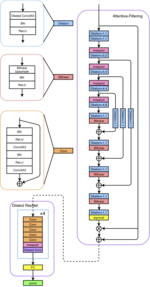
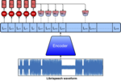
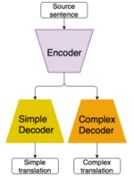
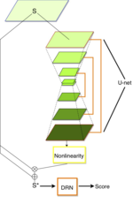
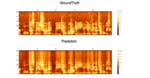

|
News
- In summer 2019, I will be visiting National Institute of Informatics in Tokyo, Japan.
- In March 2019, our system was ranked 3rd in the ASVspoof 2019 Challenge.
- In Febuary 2019, I received Merrill Lynch Fellowship for my graduate study at MIT.
- In December 2018, I received my bachelor from Johns Hopkins!
- In summer 2018, I visited University of Edinburgh, supported by Vredenburg Scholarship.
|
| 
|
ASSERT: Anti-Spoofing with Squeeze-Excitation and Residual neTworks
Cheng-I Lai,
Nanxin Chen,
Jesús Villalba,
Najim Dehak
Submitted to Proceedings of the Annual Conference of the International Speech Communication Association (INTERSPEECH), 2019
arxiv /
code /
bibtex
ASSERT is a pipeline for DNN-based approach to anti-spoofing, composed of four components: feature engineering, DNN models, network optimization and system combination, where the DNN models are variants of squeeze-excitation and residual networks.
Our systems are evaluated on the ASVspoof 2019 dataset.
|
| 
|
Contrastive Predictive Coding Based Feature for Automatic Speaker Verification
Cheng-I Lai
Bachelor Thesis, 2018
arxiv /
code /
bibtex
This thesis incorporates Contrastive Predictive Coding (CPC) features into standard automatic speaker verification systems.
Our systems are evaluated on the LibriSpeech dataset.
|
| 
|
Controlling the Reading Level of MachineTranslation Output
Kelly Marchisio,
Jialiang Guo,
Cheng-I Lai,
Philipp Koehn
MT Summit, 2019
slides
We developed methodologies to controll the complexity and reading level of machine translation systems outputs, and adopted three readability tests with extensive analyses.
Our systems are evaluated on the newstest2013, OpenSubtitles2018, and Paracrawl datasets.
|
| 
|
Attentive Filtering Networks for Audio Replay Attack Detection
Cheng-I Lai,
Alberto Abad,
Korin Richmond,
Junichi Yamaghashi,
Najim Dehak,
Simon King
Proceedings of the IEEE International Conference on Acoustics, Speech, and Signal Processing (ICASSP), 2019
arxiv /
code /
bibtex
We proposed a new countermeasure for speech spoofing attacks: Attentive Filtering Network, which is composed of an attention-based filtering mechanism that enhances feature representations in both the frequency and time domains, and a ResNet-based classifier.
Our systems are evaluated on the ASVspoof 2017 2.0 dataset.
|
| 
|
Investigation on Bandwidth Extension for Speaker Recognition
Phani Nidadavolu,
Cheng-I Lai,
Jesús Villalba,
Najim Dehak
Proceedings of the Annual Conference of the International Speech Communication Association (INTERSPEECH), 2018
arxiv /
bibtex
We addressed sampling mismatches between wideband (WB) and narrowband (NB) speech data with two techniques: (1) a Bandwidth Extension network that predicts WB features given NB features as input, and (2) a low-pass filter interpolator.
Our systems are evaluated on the Speakers In The Wild (SITW) dataset.
|
|